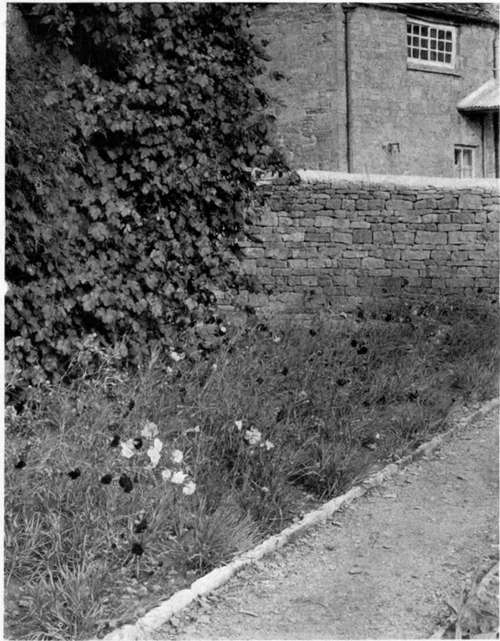
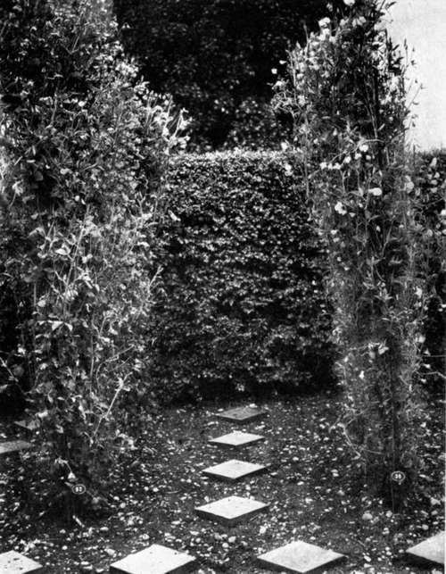

Collecting And Making New Varieties. Part 3
Description
This section is from the book "What England Can Teach Us About Gardening", by Wilhelm Miller. Also available from Amazon: What England Can Teach Us About Gardening.
Collecting And Making New Varieties. Part 3
But, granting that Mr. Burbank's results are more important than those of all the plant breeders who have ever lived, it does not follow that his methods are the best for the amateur. For then we should have no records that would help others. Mr. Burbank himself deplores the fact he has kept no records of scientific value. For this is the sort of thing he does. He shakes a plum branch over another plum tree that is in flower and all the fruits that form on that tree he saves, and then plants their stones. But is there any evidence that any of those plums is a hybrid? Not the slightest. For that plum tree would have made hundreds of fruits without the waving of that branch. And no one can plant a thousand plum pits without getting remarkable variations among the resultant fruits. The same is true of all other fruits and seeds. So if you propose to raise new varieties in this way, I bid you goodbye, for I consider that a very dull form of gambling. The only reason why some tradesmen still use so blind a method is that they possess one advantage the amateur does not have, viz., plenty of land and facilities for raising seedlings on an enormous scale at little cost. But even then it would be quicker and surer to employ a scientific plant breeder.
The scientific way to hybridize is this: First, remove the stamens before the flower opens. Second, put a bag over the flower so that bees cannot touch it. Third, when the stigma is ripe, bring to it pollen from a flower of another species. Fourth, record what you have done. Is this asking too much? English amateurs do not think so. It is about as much trouble as playing golf and keeping your own score. Only by studying such records has the world made its recent phenomenal progress in plant breeding. For instance, an Austrian priest named Mendel hybridized some garden peas and discovered a law which is of the greatest practical benefit to plant breeders of anything since Darwin's time. You will find all about it in Professor Bateson's paper called "Practical Aspects of the New Discoveries in Heredity" in the "Proceedings of the International Conference on Plant Breeding and Hybridization," published by the Horticultural Society of New York.
More than half the battle in plant breeding is to find out whether the thing you propose to do is worth doing and whether it has not been already done. However, the amateur plant breeder has one great advantage over other inventors, viz., he can always find out, if he is persistent, what the world needs most. For instance, there is an amateur mechanic in Detroit who got one thousand dollars for making a capsule machine during hours of leisure. But he could never have known that there was a market for such a thing if a friend had not taken him into confidence about his business. Now an amateur in gardening can find out what the market needs simply by collecting all the varieties of his favourite flower that he can afford to buy.
A graphic way of proving this is to make a simple chart that will show at a glance the best varieties and the greatest opportunities. You have only to consider the two most valuable characteristics of your favourite flower. Sometimes these will be size of flower and length of bloom. In lilies, the important things are colour and form of flower. So you rule four lines for the four shapes of lily and six columns for the six most important colours. This makes twenty-four squares, but in the case of the spotted lilies you can only fill in six squares with the names of satisfactory varieties, while among the unspotted lilies there are seven gaps that need to be filled.* Thus any collector can, after a single season, get a clear idea of the most important improvements to be made and the most promising material for producing the desired varieties. Isn't that more effective than gambling? Isn't that cheaper than raising thousands of ordinary seedlings?
And isn't plant breeding the natural outcome and crowning pleasure of collecting?
Why not start now to improve your favourite fruit, vegetable or flower? The best way to begin is to get the latest edition of Bailey's "Plant Breeding" and collect all the varieties which it seems reasonable to buv.
*Any one who desires further suggestions about this method will find them in the Garden Magazine, Vol. Ill, page 28.
The highest ideals in collecting are exemplified by Mr. R. B. Whyte of Ottawa whose "Perfect Half-Acre Garden" was described in Country Life in America, April I, 1911, pages 413 to 416. He cares little for a rare plant as such; it must have beauty or interest. He never desires a plant simply because no one else has it. He never takes pride in a plant because it cost a lot of money. His aim is to discover the best, and his method is comparative. How different from those orchid collectors who gloat over some ugly plant that is worth one thousand dollars simply because it is unique!
A BED OF SEEDLING CARNATIONS. A LADY IN GLOUCESTERSHIRE HAS BEEN WORKING TEN YEARS TO PRODUCE HARDY, SUMMER-BLOOMING GARDEN VARIETIES.
A SECTION OF MR. SYDENHAM'S SWEET-PEA COLLECTION AT HARD-WICKE, BIRMINGHAM, SHOWING THE NEAT IRON LABELS THAT FACILITATE THE KEEPING OF RECORDS.
Continue to:
Tags
garden, flowers, plants, England, effects, foliage, gardening